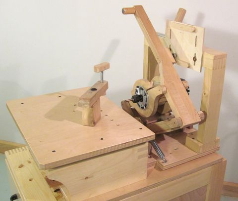
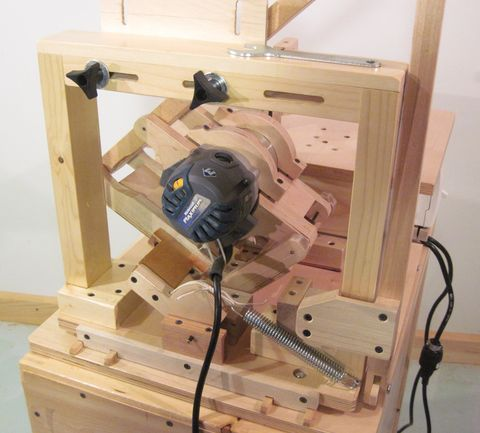

More photos of the pantorouter
All photos can be enlarged by clicking on themThe pantorouter, front left view. The router is normally below the table but I rested the guide bearing atop of the tenon template for these photos so that the router is closer to a normal operating position.
{kind=link}
Also note the on/off switch mounted next to the table. The router is turned on and off by this switch, not the switch on the router itself. This is an important safety consideration, as it's possible that you will accidentally bump the switch on the router itself when moving it around inside the frame. With the router always switched off by the separate switch, bumping the switch on the router body won't turn it on unexpectedly.
A router with a slow-start offers additional protection against accidental turn on, as there is enough time
to get one's hands out of the way as the router spins up.
Depth stops below the table. Plenty of room below the table to reach in to apply knobs and nuts to fasten things onto the table with. I didn't fit the table with any T-tracks. Mounting clamps through holes in the table is less convenient, but much sturdier than a T-track, and it avoids having to buy T track.
{kind=link}

{kind=link}
{kind=link}
 The maximum height that the router can reach above the table is about 10 cm. But the actual workable height is only
about 9 centimeters, as the router will typically bump up against any mounted template.
The maximum height that the router can reach above the table is about 10 cm. But the actual workable height is only
about 9 centimeters, as the router will typically bump up against any mounted template.
When making tenons, it's best to let the tenon overhang the table and set the depth stops such that the bit will not cut into the table. For mortises, however, it's best to put the work piece flush with the table's front edge, and plunge into the work piece.
{kind=link}
 The back of the machine. Range of motion is limited by the router bumping against the template mount and against the template itself, but this still gives about 20 cm (8") of motion.
{kind=link}
You may end up bumping the switch of the router when you move it around. This can be dangerous as it may cause
the router to turn on unexpectedly. For this reason, you should turn the router on and off by a separate
on/off switch, so that accidentally bumping the switch on the router itself will not accidentally turn it on.